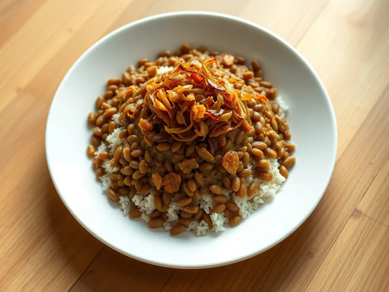

Фото: Иллюстрация ИИ, Cloudflare Workers AI
Муджадара (чечевица с рисом и жареным луком)
Ближневосточное постное блюдо из зелёной чечевицы и риса с горой хрустящего лука
35 мин4 порц.415 ккал на порциюБ 13 · Ж 16 · У 57Средиземноморская кухня
Открыть в приложении: порции, таймеры, список покупок
Продукты на 4 порц.
- Чечевица зелёная0,75 стак.
- Рис0,75 стак.
- Лук репчатый4 шт
- Оливковое масло4 ст. л.
- Зира1 ч. л.
- Вода4,5 стак.
- Соль2 ч. л.
- Перец чёрный молотыйпо вкусу
Как готовить
- Промойте чечевицу, залейте 900 мл воды и варите на среднем огне 10 минут после закипания.
- Промойте рис, добавьте его к чечевице вместе с зирой и солью. Накройте крышкой и варите на слабом огне 18 минут, пока вода не впитается, а чечевица и рис не станут мягкими.
- Пока варятся крупы, нарежьте лук тонкими полукольцами.
- Разогрейте масло на среднем огне и жарьте лук 15 минут, помешивая, пока он не станет тёмно-золотистым и хрустящим. Посолите в конце.
- Вмешайте в чечевицу с рисом половину лука вместе с маслом, поперчите.
- Разложите по тарелкам и сверху выложите оставшийся лук.
Совет. Берите зелёную или коричневую чечевицу: красная разварится в пюре. Лук не жалейте, он здесь главный вкус.